area_1_1 아트 7지점(폐허 수선 1 · 신규 생성 1 · 택1 5) ↔ 시트 area_id=1 7건(수선 2 · 택1 5) · 종류 다른 순번 0
| 순번 | 아트 (AreaCourtyard.prefab) | 시트 (main_task 라이브) | 판정 | ||||
|---|---|---|---|---|---|---|---|
| 지점 | 종류 | 그림 | key | 종류 | sprite_key | ||
| 1 | task_deco_1 | 폐허→수선 | 70001 | 수선 | deco/area1/obj_01 | 일치 | |
| 2 | task_deco_2 (task_deco_1_1) | 신규 생성 | 없음 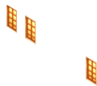 | 70002 | 수선 | deco/area1/obj_02 | 일치 |
| 3 | task_deco_3 | 택1 | 70003 | 택1 | — | 일치 | |
| 4 | task_deco_4 | 택1 | 70005 | 택1 | — | 일치 | |
| 5 | task_deco_5 | 택1 | 70007 | 택1 | — | 일치 | |
| 6 | task_deco_6 | 택1 | 70189 | 택1 | — | 일치 | |
| 7 | task_deco_7 | 택1 | 70190 | 택1 | — | 일치 | |
이 표를 읽는 법
왼쪽은 프리팹 지점 순서(1_1 은 1 바로 뒤), 오른쪽은 시트 수선·택1 순서(story 제외)를 같은 순번에 놓은 것이라 붉은 행은 그 순번에서 두 쪽의 종류가 다릅니다 — 한 곳이 어긋나면 뒤 순번이 줄줄이 밀려 붉어지므로 첫 붉은 행부터 봅니다.
area_1_2 아트 15지점(폐허 수선 4 · 신규 생성 0 · 택1 11) ↔ 시트 area_id=2 16건(수선 8 · 택1 8) · 종류 다른 순번 4
| 순번 | 아트 (AreaCourtyard.prefab) | 시트 (main_task 라이브) | 판정 | ||||
|---|---|---|---|---|---|---|---|
| 지점 | 종류 | 그림 | key | 종류 | sprite_key | ||
| 1 | task_deco_1 | 폐허→수선 | 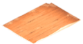 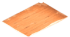 | 70008 | 수선 | deco/area2/obj_01 | 일치 |
| 2 | task_deco_2 | 폐허→수선 | 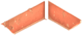 | 70009 | 수선 | deco/area2/obj_02 | 일치 |
| 3 | task_deco_3 | 택1 | 70011 | 수선 | deco/area2/obj_03 | 종류 다름 | |
| 4 | task_deco_4 | 폐허→수선 | 70012 | 수선 | deco/area2/obj_04 | 일치 | |
| 5 | task_deco_5 | 택1 | 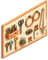 | 70013 | 택1 | — | 일치 |
| 6 | task_deco_6 | 택1 | 70014 | 택1 | — | 일치 | |
| 7 | task_deco_7 | 택1 | 70015 | 택1 | — | 일치 | |
| 8 | task_deco_8 | 폐허→수선 | 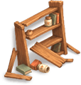 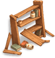 | 70191 | 수선 | deco/area2/obj_05 | 일치 |
| 9 | task_deco_9 | 택1 | 70016 | 택1 | — | 일치 | |
| 10 | task_deco_10 | 택1 | 70017 | 수선 | deco/area2/obj_06 | 종류 다름 | |
| 11 | task_deco_11 | 택1 | 70018 | 수선 | deco/area2/obj_07 | 종류 다름 | |
| 12 | task_deco_12 | 택1 | 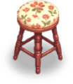 | 70019 | 수선 | deco/area2/obj_08 | 종류 다름 |
| 13 | task_deco_13 | 택1 | 70020 | 택1 | — | 일치 | |
| 14 | task_deco_14 | 택1 | 70021 | 택1 | — | 일치 | |
| 15 | task_deco_15 | 택1 | 70022 | 택1 | — | 일치 | |
| 16 | 아트 지점 없음 | 70023 | 택1 | — | 아트 없음 | ||
이 표를 읽는 법
왼쪽은 프리팹 지점 순서(1_1 은 1 바로 뒤), 오른쪽은 시트 수선·택1 순서(story 제외)를 같은 순번에 놓은 것이라 붉은 행은 그 순번에서 두 쪽의 종류가 다릅니다 — 한 곳이 어긋나면 뒤 순번이 줄줄이 밀려 붉어지므로 첫 붉은 행부터 봅니다.
area_1_3 아트 20지점(폐허 수선 5 · 신규 생성 2 · 택1 13) ↔ 시트 area_id=3 28건(수선 15 · 택1 13) · 종류 다른 순번 11
| 순번 | 아트 (AreaCourtyard.prefab) | 시트 (main_task 라이브) | 판정 | ||||
|---|---|---|---|---|---|---|---|
| 지점 | 종류 | 그림 | key | 종류 | sprite_key | ||
| 1 | task_deco_1 | 폐허→수선 | 70024 | 수선 | deco/area3/obj_01 | 일치 | |
| 2 | task_deco_1_1 | 폐허→수선 | 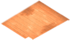 | 70025 | 택1 | — | 종류 다름 |
| 3 | task_deco_2 | 폐허→수선 | 70026 | 수선 | deco/area3/obj_02 | 일치 | |
| 4 | task_deco_3 | 폐허→수선 | 70027 | 수선 | deco/area3/obj_03 | 일치 | |
| 5 | task_deco_4 | 택1 | 70028 | 택1 | — | 일치 | |
| 6 | task_deco_5 | 택1 | 70030 | 수선 | deco/area3/obj_04 | 종류 다름 | |
| 7 | task_deco_6 | 폐허→수선 | 70031 | 택1 | — | 종류 다름 | |
| 8 | task_deco_7 | 택1 | 70032 | 수선 | deco/area3/obj_05 | 종류 다름 | |
| 9 | task_deco_8 | 택1 | 70193 | 수선 | deco/area3/obj_06 | 종류 다름 | |
| 10 | task_deco_9 | 택1 | 70195 | 택1 | — | 일치 | |
| 11 | task_deco_10 | 택1 | 70033 | 수선 | deco/area3/obj_07 | 종류 다름 | |
| 12 | task_deco_11 (task_deco_10_1) | 신규 생성 | 없음 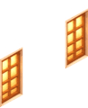 | 70034 | 택1 | — | 종류 다름 |
| 13 | task_deco_12 | 택1 | 70036 | 택1 | — | 일치 | |
| 14 | task_deco_13 | 택1 | 70037 | 수선 | deco/area3/obj_08 | 종류 다름 | |
| 15 | task_deco_14 | 택1 | 70038 | 수선 | deco/area3/obj_09 | 종류 다름 | |
| 16 | task_deco_15 | 택1 | 70040 | 택1 | — | 일치 | |
| 17 | task_deco_16 | 택1 | 70196 | 수선 | deco/area3/obj_10 | 종류 다름 | |
| 18 | task_deco_17 (task_deco_16_1) | 신규 생성 | 없음 | 70041 | 수선 | deco/area3/obj_11 | 일치 |
| 19 | task_deco_18 | 택1 | 70042 | 택1 | — | 일치 | |
| 20 | task_deco_19 | 택1 | 70044 | 수선 | deco/area3/obj_12 | 종류 다름 | |
| 21 | 아트 지점 없음 | 70045 | 택1 | — | 아트 없음 | ||
| 22 | 아트 지점 없음 | 70047 | 수선 | deco/area3/obj_13 | 아트 없음 | ||
| 23 | 아트 지점 없음 | 70049 | 수선 | deco/area3/obj_14 | 아트 없음 | ||
| 24 | 아트 지점 없음 | 70050 | 택1 | — | 아트 없음 | ||
| 25 | 아트 지점 없음 | 70051 | 택1 | — | 아트 없음 | ||
| 26 | 아트 지점 없음 | 70053 | 수선 | deco/area3/obj_15 | 아트 없음 | ||
| 27 | 아트 지점 없음 | 70054 | 택1 | — | 아트 없음 | ||
| 28 | 아트 지점 없음 | 70056 | 택1 | — | 아트 없음 | ||
이 표를 읽는 법
왼쪽은 프리팹 지점 순서(1_1 은 1 바로 뒤), 오른쪽은 시트 수선·택1 순서(story 제외)를 같은 순번에 놓은 것이라 붉은 행은 그 순번에서 두 쪽의 종류가 다릅니다 — 한 곳이 어긋나면 뒤 순번이 줄줄이 밀려 붉어지므로 첫 붉은 행부터 봅니다.
area_1_4 아트 17지점(폐허 수선 4 · 신규 생성 2 · 택1 11) ↔ 시트 area_id=4 26건(수선 15 · 택1 11) · 종류 다른 순번 7
| 순번 | 아트 (AreaCourtyard.prefab) | 시트 (main_task 라이브) | 판정 | ||||
|---|---|---|---|---|---|---|---|
| 지점 | 종류 | 그림 | key | 종류 | sprite_key | ||
| 1 | task_deco_1 | 폐허→수선 |  | 70058 | 수선 | deco/area4/obj_01 | 일치 |
| 2 | task_deco_2 | 폐허→수선 |  | 70060 | 수선 | deco/area4/obj_02 | 일치 |
| 3 | task_deco_3 | 폐허→수선 | 70061 | 수선 | deco/area4/obj_03 | 일치 | |
| 4 | task_deco_4 | 택1 | 70063 | 택1 | — | 일치 | |
| 5 | task_deco_5 (task_deco_4_1) | 신규 생성 | 없음 | 70065 | 수선 | deco/area4/obj_04 | 일치 |
| 6 | task_deco_6 (task_deco_4_2) | 신규 생성 | 없음 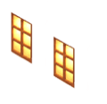 | 70067 | 택1 | — | 종류 다름 |
| 7 | task_deco_7 | 택1 | 70068 | 수선 | deco/area4/obj_05 | 종류 다름 | |
| 8 | task_deco_8 | 택1 | 70069 | 수선 | deco/area4/obj_06 | 종류 다름 | |
| 9 | task_deco_9 | 택1 | 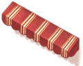 | 70071 | 택1 | — | 일치 |
| 10 | task_deco_10 | 택1 | 70072 | 수선 | deco/area4/obj_07 | 종류 다름 | |
| 11 | task_deco_11 | 택1 | 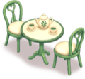   | 70074 | 택1 | — | 일치 |
| 12 | task_deco_12 | 택1 |  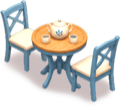 | 70075 | 수선 | deco/area4/obj_08 | 종류 다름 |
| 13 | task_deco_13 | 폐허→수선 |  | 70077 | 수선 | deco/area4/obj_09 | 일치 |
| 14 | task_deco_14 | 택1 | 70079 | 택1 | — | 일치 | |
| 15 | task_deco_15 | 택1 | 70080 | 수선 | deco/area4/obj_10 | 종류 다름 | |
| 16 | task_deco_16 | 택1 | 70082 | 택1 | — | 일치 | |
| 17 | task_deco_17 | 택1 | 70083 | 수선 | deco/area4/obj_11 | 종류 다름 | |
| 18 | 아트 지점 없음 | 70085 | 택1 | — | 아트 없음 | ||
| 19 | 아트 지점 없음 | 70086 | 수선 | deco/area4/obj_12 | 아트 없음 | ||
| 20 | 아트 지점 없음 | 70088 | 수선 | deco/area4/obj_13 | 아트 없음 | ||
| 21 | 아트 지점 없음 | 70090 | 택1 | — | 아트 없음 | ||
| 22 | 아트 지점 없음 | 70091 | 수선 | deco/area4/obj_14 | 아트 없음 | ||
| 23 | 아트 지점 없음 | 70093 | 택1 | — | 아트 없음 | ||
| 24 | 아트 지점 없음 | 70094 | 수선 | deco/area4/obj_15 | 아트 없음 | ||
| 25 | 아트 지점 없음 | 70096 | 택1 | — | 아트 없음 | ||
| 26 | 아트 지점 없음 | 70097 | 택1 | — | 아트 없음 | ||
이 표를 읽는 법
왼쪽은 프리팹 지점 순서(1_1 은 1 바로 뒤), 오른쪽은 시트 수선·택1 순서(story 제외)를 같은 순번에 놓은 것이라 붉은 행은 그 순번에서 두 쪽의 종류가 다릅니다 — 한 곳이 어긋나면 뒤 순번이 줄줄이 밀려 붉어지므로 첫 붉은 행부터 봅니다.
area_1_5 아트 1지점(폐허 수선 1 · 신규 생성 0 · 택1 0) ↔ 시트 area_id=5 35건(수선 22 · 택1 13) · 종류 다른 순번 0
| 순번 | 아트 (AreaCourtyard.prefab) | 시트 (main_task 라이브) | 판정 | ||||
|---|---|---|---|---|---|---|---|
| 지점 | 종류 | 그림 | key | 종류 | sprite_key | ||
| 1 | task_deco_1 | 폐허→수선 |  | 70099 | 수선 | deco/area5/obj_01 | 일치 |
| 2 | 아트 지점 없음 | 70100 | 수선 | deco/area5/obj_02 | 아트 없음 | ||
| 3 | 아트 지점 없음 | 70101 | 수선 | deco/area5/obj_03 | 아트 없음 | ||
| 4 | 아트 지점 없음 | 70103 | 택1 | — | 아트 없음 | ||
| 5 | 아트 지점 없음 | 70104 | 수선 | deco/area5/obj_04 | 아트 없음 | ||
| 6 | 아트 지점 없음 | 70106 | 택1 | — | 아트 없음 | ||
| 7 | 아트 지점 없음 | 70107 | 수선 | deco/area5/obj_05 | 아트 없음 | ||
| 8 | 아트 지점 없음 | 70109 | 수선 | deco/area5/obj_06 | 아트 없음 | ||
| 9 | 아트 지점 없음 | 70110 | 택1 | — | 아트 없음 | ||
| 10 | 아트 지점 없음 | 70112 | 수선 | deco/area5/obj_07 | 아트 없음 | ||
| 11 | 아트 지점 없음 | 70113 | 택1 | — | 아트 없음 | ||
| 12 | 아트 지점 없음 | 70115 | 수선 | deco/area5/obj_08 | 아트 없음 | ||
| 13 | 아트 지점 없음 | 70116 | 택1 | — | 아트 없음 | ||
| 14 | 아트 지점 없음 | 70118 | 수선 | deco/area5/obj_09 | 아트 없음 | ||
| 15 | 아트 지점 없음 | 70119 | 수선 | deco/area5/obj_10 | 아트 없음 | ||
| 16 | 아트 지점 없음 | 70121 | 택1 | — | 아트 없음 | ||
| 17 | 아트 지점 없음 | 70122 | 수선 | deco/area5/obj_11 | 아트 없음 | ||
| 18 | 아트 지점 없음 | 70124 | 택1 | — | 아트 없음 | ||
| 19 | 아트 지점 없음 | 70125 | 수선 | deco/area5/obj_12 | 아트 없음 | ||
| 20 | 아트 지점 없음 | 70127 | 수선 | deco/area5/obj_13 | 아트 없음 | ||
| 21 | 아트 지점 없음 | 70128 | 택1 | — | 아트 없음 | ||
| 22 | 아트 지점 없음 | 70129 | 수선 | deco/area5/obj_14 | 아트 없음 | ||
| 23 | 아트 지점 없음 | 70130 | 택1 | — | 아트 없음 | ||
| 24 | 아트 지점 없음 | 70131 | 수선 | deco/area5/obj_15 | 아트 없음 | ||
| 25 | 아트 지점 없음 | 70133 | 택1 | — | 아트 없음 | ||
| 26 | 아트 지점 없음 | 70134 | 수선 | deco/area5/obj_16 | 아트 없음 | ||
| 27 | 아트 지점 없음 | 70136 | 수선 | deco/area5/obj_17 | 아트 없음 | ||
| 28 | 아트 지점 없음 | 70137 | 택1 | — | 아트 없음 | ||
| 29 | 아트 지점 없음 | 70139 | 수선 | deco/area5/obj_18 | 아트 없음 | ||
| 30 | 아트 지점 없음 | 70140 | 택1 | — | 아트 없음 | ||
| 31 | 아트 지점 없음 | 70142 | 수선 | deco/area5/obj_19 | 아트 없음 | ||
| 32 | 아트 지점 없음 | 70143 | 수선 | deco/area5/obj_20 | 아트 없음 | ||
| 33 | 아트 지점 없음 | 70144 | 수선 | deco/area5/obj_21 | 아트 없음 | ||
| 34 | 아트 지점 없음 | 70145 | 택1 | — | 아트 없음 | ||
| 35 | 아트 지점 없음 | 70147 | 수선 | deco/area5/obj_22 | 아트 없음 | ||
이 표를 읽는 법
왼쪽은 프리팹 지점 순서(1_1 은 1 바로 뒤), 오른쪽은 시트 수선·택1 순서(story 제외)를 같은 순번에 놓은 것이라 붉은 행은 그 순번에서 두 쪽의 종류가 다릅니다 — 한 곳이 어긋나면 뒤 순번이 줄줄이 밀려 붉어지므로 첫 붉은 행부터 봅니다.